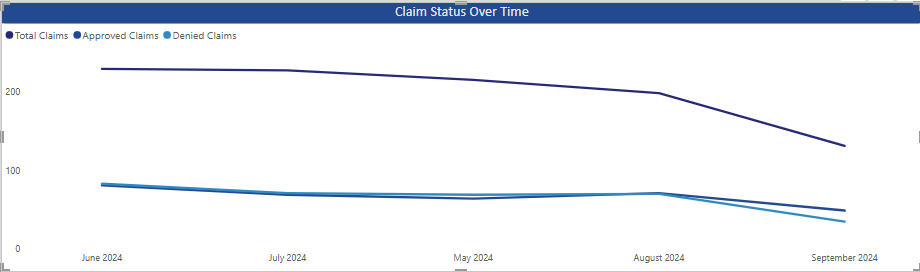
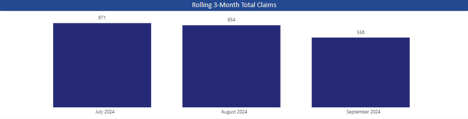

4. Power BI Dashboard Development
The Power BI dashboard will contain:
- KPIs: Total Claims, Denial Rate, Average Paid Amount.
- Visuals:
- Pie Chart: Claim Status Breakdown.
- Bar Chart: Denial Reasons by Frequency.
- Heatmap: Claim Approval by Provider.
- Table: Top Providers by Claim Volume.
Steps to Build Dashboard
- Load the Data into Power BI.
- Transform Data:
- Convert "Date of Service" to Date format.
- Create calculated columns for Claim Approval Rate, Claim Denial Rate, etc.
Key DAX Measures
Total Claims = COUNT('claim_data'[Claim ID])
Denial Rate = DIVIDE(COUNTROWS(FILTER('claim_data', 'claim_data'[Claim Status] = "Denied")), [Total Claims], 0)
Avg Paid Amount = AVERAGE('claim_data'[Paid Amount])
Advanced DAX
Claim Approval Rate =
VAR Approved = COUNTROWS(FILTER('claim_data', 'claim_data'[Claim Status] = "Paid"))
VAR Total = COUNTROWS('claim_data')
RETURN DIVIDE(Approved, Total, 0)

Claim Trends over Time: Time Intelligence
We can create Time Intelligence DAX to track trends using a Date Table linked to the Date of Service field in the claims dataset.
Date tables can be created using DAX or m code. In this scenario, I am using DAX.
DateTable =
ADDCOLUMNS(
CALENDAR(FIRSTDATE(claim_data[Date of Service]),LASTDATE(claim_data[Date of Service])), // Adjust start date as needed
"Month Name", FORMAT([Date], "MMM"),
"Month Year", FORMAT([Date], "MMM YYYY"),
"Month Number", MONTH([Date]),
"Quarter", "Q" & FORMAT([Date], "Q")
)
We can look at claim status over time by looking at Month & Year for total claims, approved claims, and denied claims.
We can also identify trends by looking at the 3 month rolling total claims. We can also modify this to look at the previous 12 months for trends. For this calculation to work, a current date needs to be chosen. I added a date filter so the calculation knows when to start the 3 month period.
Rolling 3-Month Claims =
VAR MaxDate = MAX('DateTable'[Date])
RETURN
CALCULATE(
[Total Claims],
DATESINPERIOD('DateTable'[Date], MaxDate, -3, MONTH)
)

Month over Month is another common KPI we can look at.
MoM Claims % Change =
VAR PrevMonth =
CALCULATE(
[Total Claims],
PREVIOUSMONTH('DateTable'[Date])
)
RETURN
IF(
NOT ISBLANK(PrevMonth),
DIVIDE([Total Claims] - PrevMonth, PrevMonth, BLANK()),
BLANK()
)
5. Findings
- Incorrect billing information is the most common denial reason.
- Authorization not obtained is the second most common denial reason.
- Claim status is evenly distributed among the 1,000 claim sample. This is synthetic data, so that makes sense.
- Medicare has the highest denial rate of all insurance types.
- Provider 8 has the highest claim denial rate along with one of the highest amount of total claims.
6. Next Steps
- Deep dive into claims billing information and find out if there is a trend or if only specific providers are having this issue.
- Look at Medicare claims and providers to find out more information as to why they deny claims more often.
- Analyze Provider 8 to find out more about their denials.